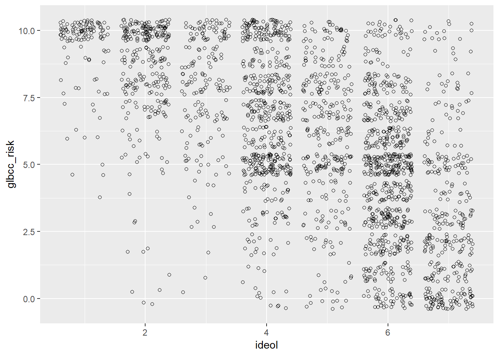
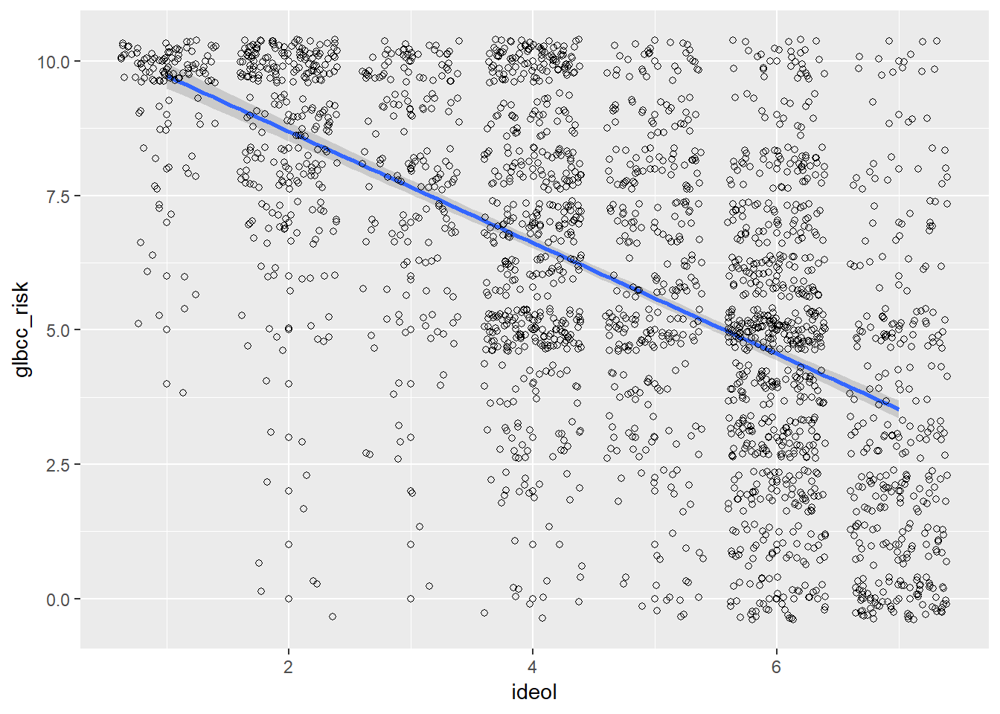
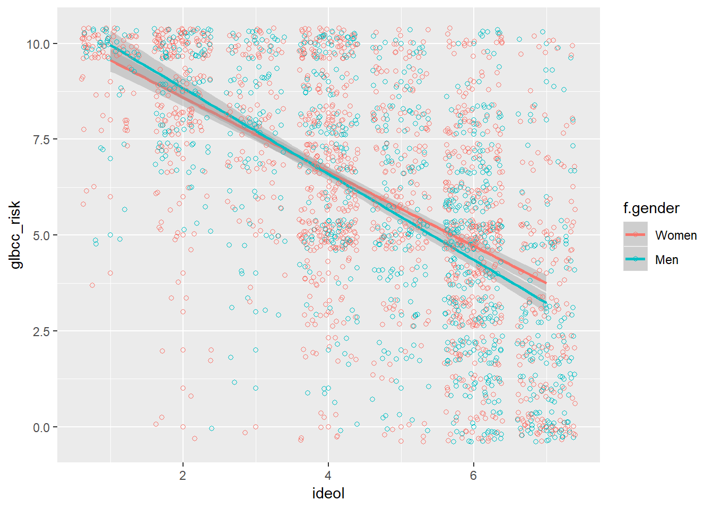
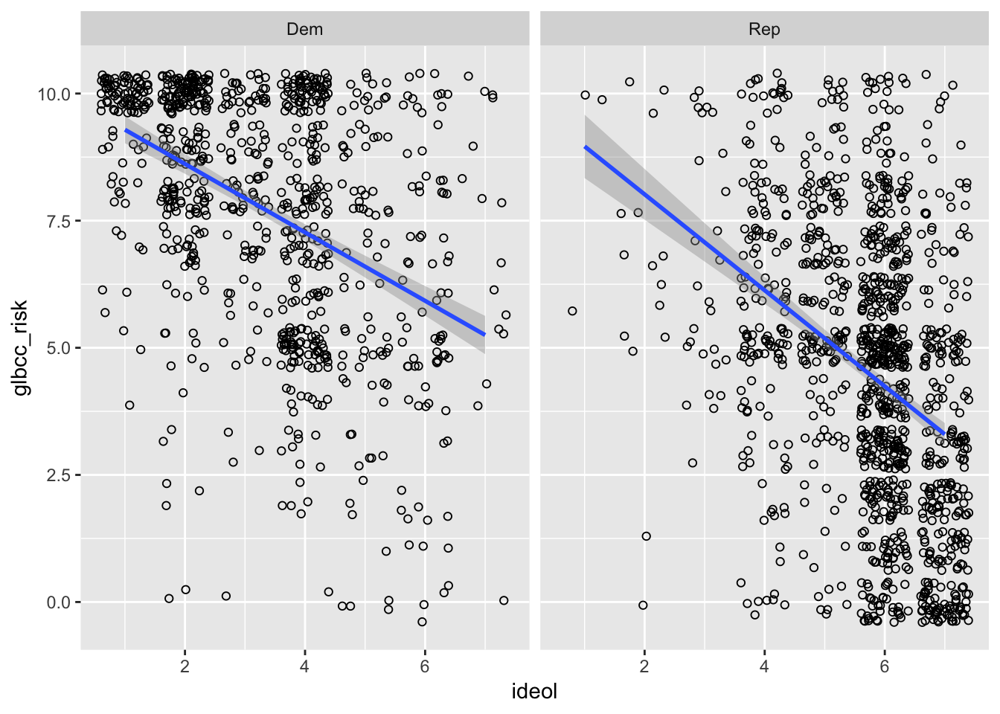
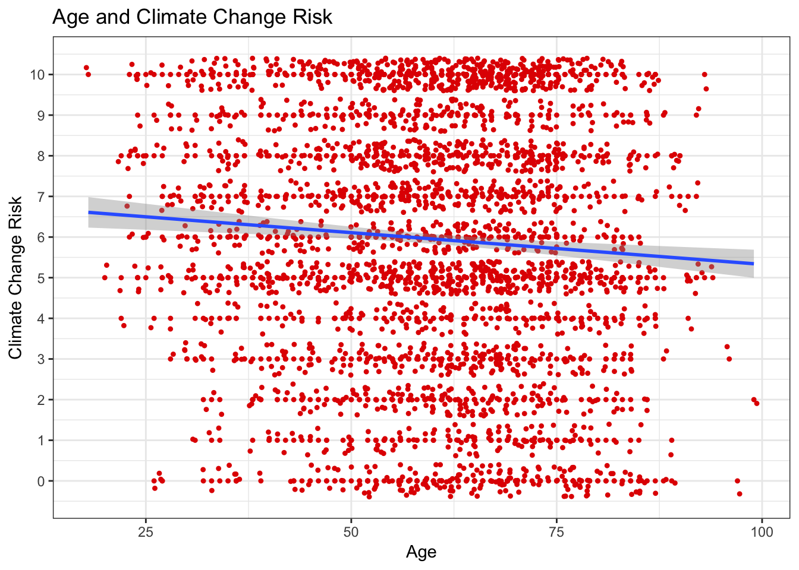

7 Covariance and Correlation
Research is not always interested in the contrast of two variables, but oftentimes the relationship of two variables. For instance, what is the relationship between climate science and ideology? The following packages are required for this lab:
- tidyverse
- psych
- car
- vcd
7.1 Covariance
Covariance is the measure of change in one variable associated to change in another variable. That is, the measure of how two random variables vary together.
Calculating covariance of two variables of a known population is trivial, as the product of variation of two variables. However, for samples, covariance is calculated via the following formula:
\[cov(x,y)=\frac{\sum_{i=1}^n (x_{i}-\bar{x})(y_{i}-\bar{y})}{{n-1}}\]
Where x and y are two random variables, i is each observation (row), and n is the sample size.
7.1.1 Covariance by Hand
To find covariance by hand, let’s construct a hypothetical data set with variables x and y. We only give each variable three values so that the calculation will be shorter.
First we calculate the difference of each value and the mean for the variables:
Next we find the product of the above differences:
## [1] 9.333333 0.000000 -1.333333We complete the numerator by finding the sum of the products:
Lastly, we complete the covariance calculation by dividing the numerator by the denominator. The denominator is calculated as one less than the sample size:
## [1] 47.1.2 Covariance in R
By using the cov() function, R calculates the covariance. We demonstrate the cov() function by confirming the previous section’s calculations:
## [1] 47.1.3 Covariance in Class Data Set
To demonstrate further we will calculate covariance for various pairs of variables within the class data set. First, suppose we are interested in the relationship between certainty that humans cause climate change (glbcc_cert) and the perceived risk of climate change (glbcc_risk). That is, is there a relationship between respondents’ certainty that humans cause climate change and their perceived risk of climate change? Our hypothesis could be that individuals that are more certain that climate change is a consequence of humans are likely more concerned about the associated risk.
## [1] 3.092168Note: The cov() function requires use="complete.obs" to remove NA entries.
The calculated covariance of certainty and risk perception is positive, indicating the two variables are positively related. As one variable changes, the other variable will change in the same direction with a magnitude of 3.09. Increased certainty that humans cause climate change increases the perceived risk of climate change.
Suppose we are also interested in the relationship of income and perceived risk of climate change:
## [1] -10826.91The calculated covariance of income and perceived risk of climate change is negative, indicating the two variables are negatively related. As one variable changes, the other variable will change in the opposite direction with a magnitude of -10826.91.
An important follow-up question is: which variable is more strongly associated to perceived risk, certainty or income? We cannot compare magnitudes to the difference in scales and units. Income is measured on a scale inclusive of higher numbers compared to certainty. To compare strengths of association we need to standardize covariance.
7.2 Correlation
Correlation standardizes covariance on a scale of negative one to one, whereby the magnitude from zero indicates strength of relationship. Similar to covariance, a positive and negative value reflects the respective relationship. The formula for correlation is the following:
\[r_{xy}=\frac{cov(x,y)}{s_xs_y}\]
Where x and y are two random variables.
7.2.1 Correlation by Hand
To find covariance by hand, let’s use the data set we constructed earlier to calculate covariance.
Recall we calculated covariance manually via the following steps:
x <- c(25, 27, 29)
y <- c(5, 15, 9)
xdev <- x - mean(x)
ydev <- y - mean(y)
xdev_ydev <- xdev * ydev
sum_xdev_ydev <- sum(xdev_ydev)
cov_xy <- (1 / (3 - 1)) * sum_xdev_ydev
cov_xy## [1] 4For calculating correlation we need the product of the standard deviations of variables x and y for the denominator:
Now we find the quotient of the covariance numerator and standard deviations denominator:
## [1] 0.3973597The relationship is positive; however, the correlation coefficient is \(\approx\) 0.40.
Returning to the class data set, we can find the correlation coefficient for certainty humans cause climate change and perceived risk of climate change from the class data set:
numerator <- cov(ds$glbcc_cert, ds$glbcc_risk, use = "complete.obs")
denominator <- sd(ds$glbcc_cert, na.rm = T) * sd(ds$glbcc_risk, na.rm = T)
numerator / denominator## [1] 0.3699554The correlation coefficient is \(\approx\) 0.37.
Now let’s find the correlation coefficient for ideology and perceived risk from climate change.
First we will create a subset from the class data set ds for the variables of interest, absent of missing observations. Note: This subset includes additional variables, f.gender and f.party.2 for use later in this lab.
The perceived risk and ideology variables are assigned to x and y variables within the ds.sub object, as to follow the formula.
The x and y variables are then used to find the covariance, similar to the steps demonstrated earlier:
xbar <- mean(ds.sub$x)
ybar <- mean(ds.sub$y)
x.m.xbar <- ds.sub$x - xbar
y.m.ybar <- ds.sub$y - ybar
n <- length(ds.sub$x)
n## [1] 2388## [1] -3.134752Next, we find the correlation coefficient using the covariance as the numerator and the product of both variable standard deviations as the denominator:
## [1] 3.058544## [1] 1.74181## [1] -0.5884202The correlation coefficient for the variables is \(\approx\) -0.59. The manual calculation is confirmed using the cor() function in R:
## [1] -0.5884202Note: To calculate the correlation coefficient manually in one line of code:
sum((x-mean(x))*(y-mean(y))) /(sqrt(sum((x-mean(x))^2))*sqrt(sum((y-mean(y))^2)))
7.2.2 Correlation Tests
The previous section demonstrated the cor() function to confirm the manual calculation of the correlation coefficient. Using this function we can find the correlation coefficient of the income and perceived risk variables:
## [1] -0.05904785The correlation coefficient of -0.06 informs us of two things: the relationship is negative and very weak. Note: The correlation coefficient is drawn from observations within a sample, and therefore is a random value. That is, if we were to collect multiple samples we would calculate different correlation coefficients for each sample collected. This leads to a new hypothesis: is there a relationship between income and perceived risk? To test this we employ Pearson’s product-moment correlation available via the cor.test() function. Our testing hypotheses are:
-\(H_0\): the true correlation coefficient is zero
-\(H_1\): the true correlation coefficient is not zero
##
## Pearson's product-moment correlation
##
## data: ds$income and ds$glbcc_risk
## t = -2.83, df = 2289, p-value = 0.004695
## alternative hypothesis: true correlation is not equal to 0
## 95 percent confidence interval:
## -0.09975880 -0.01813952
## sample estimates:
## cor
## -0.05904785The correlation test yields a p-value < \(\alpha\) = 0.05, thereby the null hypothesis is rejected such that the true correlation coefficient is not zero.
Note: Despite rejecting the null hypothesis, our random correlation value is still quite small at -0.06. This indicates a very weak, or non-substance, relationship between income and perceived risk.
To demonstrate a potentially substantive relationship we look at ideology and perceived risk of climate change using the cor.test() function:
##
## Pearson's product-moment correlation
##
## data: ds$ideol and ds$glbcc_risk
## t = -36.633, df = 2511, p-value < 0.00000000000000022
## alternative hypothesis: true correlation is not equal to 0
## 95 percent confidence interval:
## -0.6150780 -0.5640865
## sample estimates:
## cor
## -0.5901706The default correlation test method for the cor.test() function is the Pearson test. The Spearman test is required for ordinal data via the method="spearman" argument within the cor.test() function. For calculation correlation with ordinal data.
7.2.3 Correlation Across Groups
Suppose you are interested in correlations across multiple variables. The cor() function examines the correlation between each variable pair for an entire data set. As such, if you are interested in only the correlation for select variables then use the select() function and select your variablesof interest, then pipe them into the cor() function. Include drop_na(). To demonstrate using variables from the class data set:
## glbcc_risk ideol income age
## glbcc_risk 1.00000000 -0.59999737 -0.06079785 -0.06799270
## ideol -0.59999737 1.00000000 0.03901982 0.08608048
## income -0.06079785 0.03901982 1.00000000 -0.11761722
## age -0.06799270 0.08608048 -0.11761722 1.00000000This resulting matrix provides the correlation coefficients for two variables at a time. The correlation coefficients are defined by the intercept of the row and columns corresponding to each variable.
Additionally, recalling that each correlation coefficient itself is a random value, a test is required for inference. The corr.test() provided by the psych package is an alternative to the cor.test() function previously used. The corr.test() function supports examining variable pairs simultaneously within a given data set. Use the print() function with the short=FALSE argument to view the complete test with confidence intervals and p-values.
ds %>%
dplyr::select(glbcc_risk, ideol, income, age) %>%
drop_na() %>%
corr.test %>%
print(short = FALSE)## Call:corr.test(x = .)
## Correlation matrix
## glbcc_risk ideol income age
## glbcc_risk 1.00 -0.60 -0.06 -0.07
## ideol -0.60 1.00 0.04 0.09
## income -0.06 0.04 1.00 -0.12
## age -0.07 0.09 -0.12 1.00
## Sample Size
## [1] 2275
## Probability values (Entries above the diagonal are adjusted for multiple tests.)
## glbcc_risk ideol income age
## glbcc_risk 0 0.00 0.01 0
## ideol 0 0.00 0.06 0
## income 0 0.06 0.00 0
## age 0 0.00 0.00 0
##
## Confidence intervals based upon normal theory. To get bootstrapped values, try cor.ci
## raw.lower raw.r raw.upper raw.p lower.adj upper.adj
## glbc_-ideol -0.63 -0.60 -0.57 0.00 -0.63 -0.56
## glbc_-incom -0.10 -0.06 -0.02 0.00 -0.11 -0.01
## glbc_-age -0.11 -0.07 -0.03 0.00 -0.12 -0.02
## ideol-incom 0.00 0.04 0.08 0.06 0.00 0.08
## ideol-age 0.05 0.09 0.13 0.00 0.03 0.14
## incom-age -0.16 -0.12 -0.08 0.00 -0.17 -0.067.3 Visualizing Correlation
The simplest form to visualize correlation is a scatter plot with a trend line.
We will review the relationship between ideology and perceived risk from climate change. Build the basic visualization by using ggplot() and the geom_point functions, with ideology on the x axis and perceived risk about climate change on the y axis. Use the ds.sub dataset, because we removed the missing values.

Notice how this doesn’t really make sense? This is because there are thousands of observations being placed on a discrete set of values. To get a better idea of the relationship, we can tell R to jitter the points. “Jittering” provides a tiny bit of white noise and variance to the values, so that we can see where there is high overlap of observations. This provides a better picture of the relationship. This time use the geom_jitter function instead of the geom_point function:

Notice the apparent negative correlation. Verify this by checking the correlation:
## ideol glbcc_risk
## ideol 1.0000000 -0.5901706
## glbcc_risk -0.5901706 1.0000000A trend line to the scatter plot helps to interpret directionality of a given variable pair. The next lab will further introduce trend lines, but for now we introduce it via the geom_smooth() function by including the method=lm argument. We also need to include geom_point() for each point.
ggplot(ds.sub, aes(x = ideol, y = glbcc_risk)) +
geom_point(shape = 1) +
geom_smooth(method = lm) +
geom_jitter(shape = 1)
The ideology points can be differentiated by other variables, such as gender, to examine potential difference among gender by defining the color argument as follows:
ggplot(ds.sub, aes(x = ideol, y = glbcc_risk, color = f.gender)) +
geom_point(shape = 1) +
geom_smooth(method = lm) +
geom_jitter(shape = 1)
7.3.1 Another Example: Political Party
Let’s look at this relationship broken down by political party. Perhaps you wanted to see if the relationship looks different for Republicans and Democrats. We can first subset the data for Republicans and Democrats:
Next we investigate the correlation between ideology and perceived risk of climate change for Republicans and Democrats separately:
##
## Pearson's product-moment correlation
##
## data: ds.rep$ideol and ds.rep$glbcc_risk
## t = -14.352, df = 1171, p-value < 0.00000000000000022
## alternative hypothesis: true correlation is not equal to 0
## 95 percent confidence interval:
## -0.4343892 -0.3369909
## sample estimates:
## cor
## -0.3867682##
## Pearson's product-moment correlation
##
## data: ds.dem$ideol and ds.dem$glbcc_risk
## t = -13.977, df = 859, p-value < 0.00000000000000022
## alternative hypothesis: true correlation is not equal to 0
## 95 percent confidence interval:
## -0.4833657 -0.3744104
## sample estimates:
## cor
## -0.4304548The correlation coefficient is slightly more negative for Democrats.
To create a visualization that compares the two parties and the relationship between climate change risk and ideology, a few simple lines of code can get the job done. First filter the data to include Democrats and Republicans, select the variables of interest, drop NAs, pipe it all into ggplot2, then use facet_wrap() to create two visualizations, one for each party:
ds %>%
filter(f.party.2 == "Dem" | f.party.2 == "Rep") %>%
dplyr::select(ideol, glbcc_risk, f.party.2) %>%
na.omit() %>%
ggplot(., aes(ideol, glbcc_risk)) +
geom_jitter(shape = 1) +
geom_smooth(method = lm) +
facet_wrap(~ f.party.2, scales = "fixed")
7.3.2 One More Visualization
We cap this lab off with creating one last visualization. First create a new subset of our data exclusive of all missing observations. Include variables for climate change risk and age.
First we look at our age variable.
## vars n mean sd median trimmed mad min max range skew kurtosis
## X1 1 2536 60.37 14.2 62 61.02 13.34 18 99 81 -0.39 -0.24
## se
## X1 0.28Now find the correlation:
##
## Pearson's product-moment correlation
##
## data: sub.ds$glbcc_risk and sub.ds$age
## t = -3.6446, df = 2534, p-value = 0.0002732
## alternative hypothesis: true correlation is not equal to 0
## 95 percent confidence interval:
## -0.11082410 -0.03338258
## sample estimates:
## cor
## -0.07221218There is a slight negative correlation. We can interpret this as indicating that younger people are slightly more concerned about climate change. Now we construct the visualization:
ggplot(sub.ds, aes(y = glbcc_risk, x = age)) +
geom_point(shape = 20, color = "#e20000") +
geom_jitter(shape = 20, color = "#e20000") +
geom_smooth(method = lm) +
xlab("Age") +
ylab("Climate Change Risk") +
ggtitle("Age and Climate Change Risk") +
scale_y_continuous(breaks = c(0:10),
labels = c("0","1","2", "3", "4", "5", "6", "7", "8", "9", "10")) +
theme_bw()